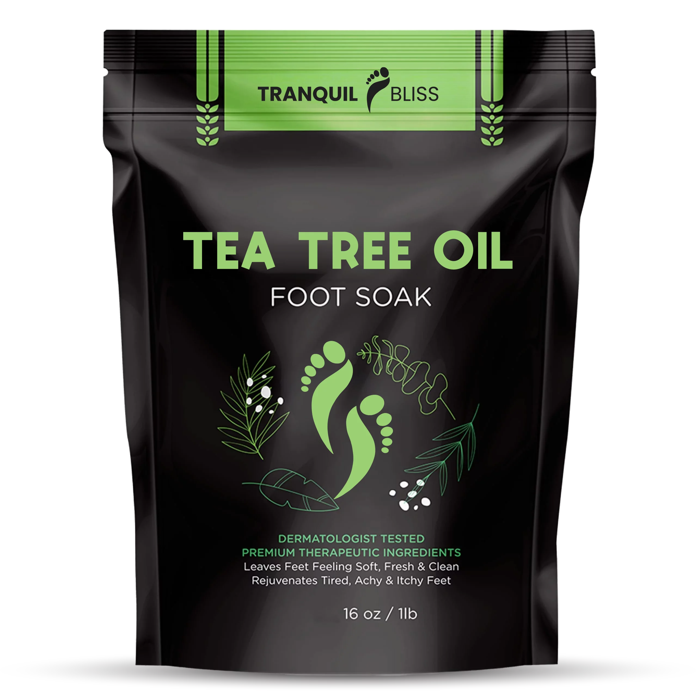
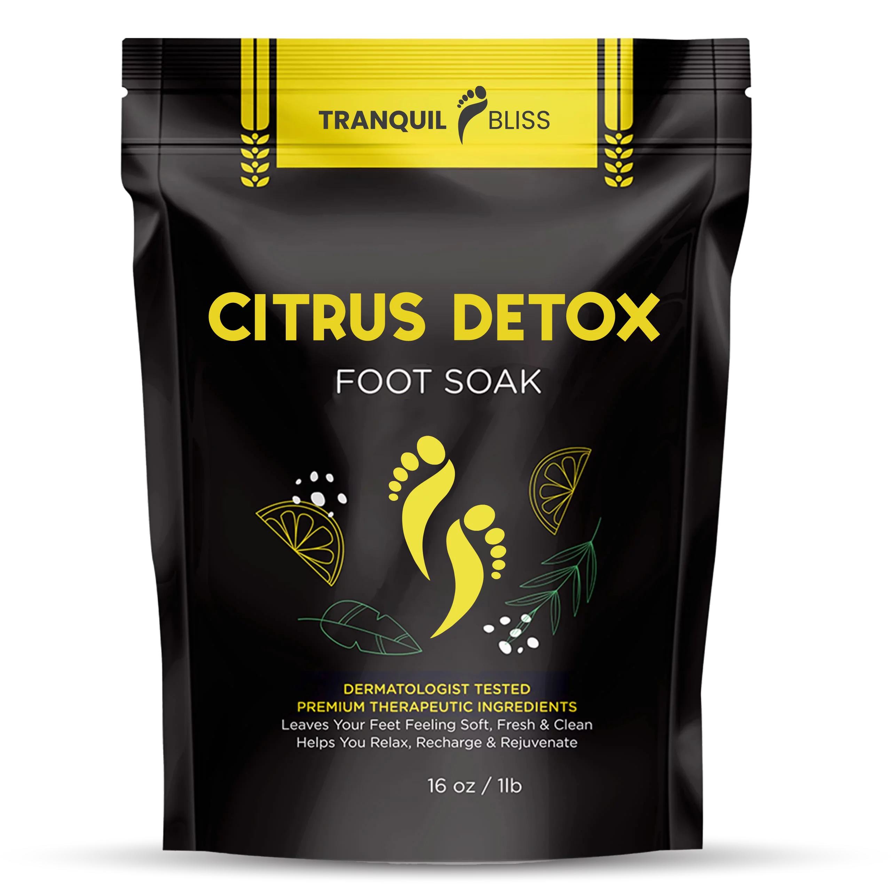
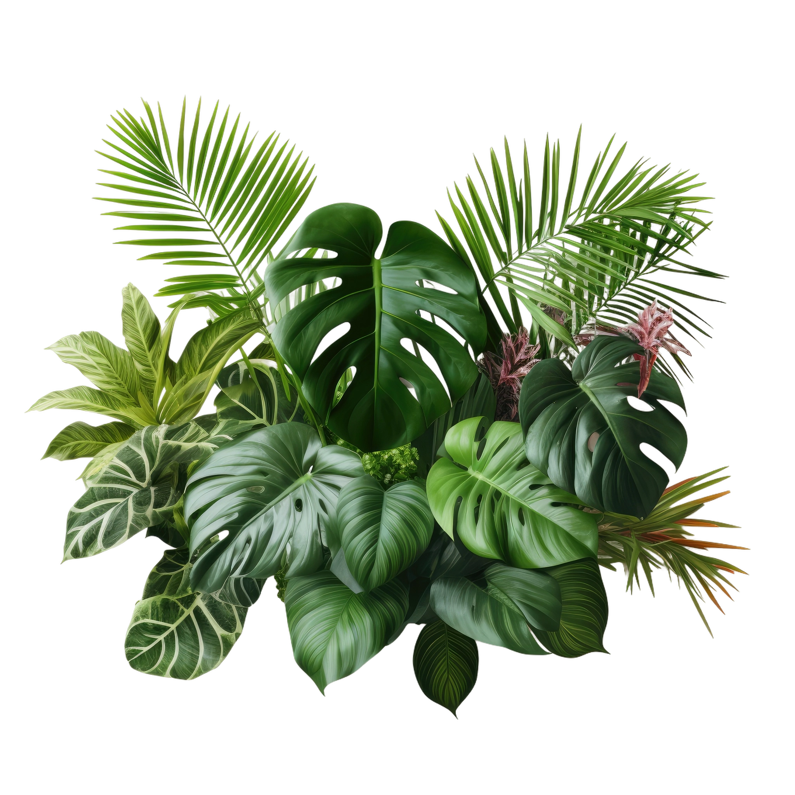
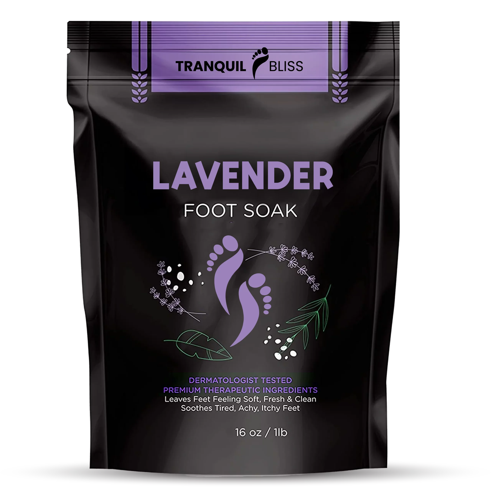

Whether you're preparing for a special occasion or simply winding down after a hectic day, Tranquil Bliss
Foot Soak Salts offer approach to foot care. Experience the serenity and
revitalization that comes from
a blend of nature’s finest ingredients, tailored to meet your foot care needs.
Give yourself the best with Tranquil Bliss Foot Soak Salts –
because your feet carry you through life,
and they deserve to be pampered.


Tea Tree Oil


Citrus Detox

Lavender


Lisa M.
"Absolutely love these foot soak salts! My feet feel so soft and the lavender scent is divine."
John D.
"Perfect after a long run. Relieves my foot pain and leaves them smelling great."
Sarah P.
"Great product. It’s a bit pricey but worth it for the quality and relaxation it provides."